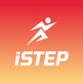
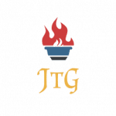
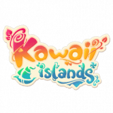
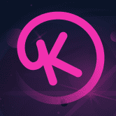
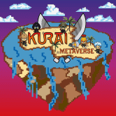
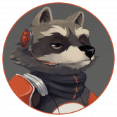

 ISTEP iStep 是 BSC 生态系统上的一款生活方式应用，结合了 GameFi 和 SocialFi 元素。 我们的目标是建立一个热衷于引领健康生活方式的大型社区。 通过 iStep，我们的社区不仅可
 Journey To Godhood Journey To Godhood 是一款基于 Discord 的 RPG，玩家可以在其中控制自己的角色，以非常类似于龙与地下城的方式决定自己的数据、自己的装备和自己的冒险。每个角色都非常
 Kawaii Islands An Anime Metaverse - “玩，创造，连接和赚钱” Kawaii Islands 是一款 NFT 游戏赚钱游戏，在云端创建一个奇幻世界，供多人体验包括设计、建造、制作、耕作和社交网络在内的一整套
 Kryptomon Kryptomons 是建立在 BSC 区块链上的数字收藏怪物。可以使用我们专用的 BEP20 代币 (KMON) 购买它们。与其他玩家繁殖，创造出具有令人兴奋的特性和新的力量水平的新蛋。 在发布
 Kurai Metaverse 连接任何智能合约和 NFT 在在线游戏中与您最喜欢的 DAPP 和 NFT 交互 使用您的 NFT 无论您在 ETH、BSC、POLYGON 上是否有 NFT …&helli
 Laikaverse Laika Verse 是一款即将推出的基于币安智能链 (BSC) 的太空探索、领土征服、政治统治等角色扮演游戏。 Laika Verse 有两种类型的战斗：PVE（玩家对环境）和 PVP（玩家对
LAMDAMOON METAVERSE Lamdamoon Metaverse 是一款基于 Moonbeam/Polkadot 和 Unreal Engine 5 构建的实验性高端 3D NFT 游戏。 Lamdamoon是L.A.M.D.A太阳系的第三颗行星Lamda的卫星。 Lamda 这个名字来自 Lonely
Legend of Novaria 诺瓦利亚传奇 (LoN) 是一款完全在 BSC 上推出的 4x P2E MMO 太空主题策略游戏。 4x 策略意味着 1) 构建、2) 探索、3) 防御和 4) 攻击。 LoN 是一款真正的“大型多人在线游戏
Mecha World 一款关于在 WAX 区块链上建造、探索和与机甲动物战斗的后世界末日 NFT 游戏。 Mechas 是您的基础 NFT。在发布时，将有 36 种基于 Canine 体型和颜色的不同外观。您的机甲
Medium Rare Potato Medium Rare Potato 是一款关于区块链上的食物、饮料和餐厅业务的 NFT 游戏。选择一家餐厅或一个角色，创建自己的菜单，烹饪来自世界各地不同美食的菜肴并参与烹饪大战
MeetsMeta Scholarship Dapp MeetsMeta Scholarship dApp 是一个平台，它让游戏社区能够分散 NFT 持有者和游戏玩家之间的互动，安全地为持有者提供被动收入，同时增加游戏玩家的收入和收益。 持有者可以根据
MegaCryptoPolis 多区块链城市建设者策略游戏 - 一款突破性的 MMO，让来自世界各地的玩家能够以前所未有的方式共同建设一个独特的特大城市。 MegaCryptoPolis 中的每一项资产都是存储
Meme Lordz Meme Lordz 是一款 100 多小时的区块链游戏，由币安智能链网络提供支持。探索怀旧的、自上而下的 Memnon 开放世界，并利用游戏内铸币将每个 Meme Lord 永生化为不可替代代币 (
MetaDerby MetaDerby 是一个通过游戏赚取的 NFT 赛马虚拟世界，玩家可以通过 Avalanche 上的免费游戏功能赚取代币和真钱。在 MetaDerby 中，玩家可以参与赛马、马匹繁殖、购买土地和在土地上建
METAFISH MetaFish 是 BSC 上第一个推荐游戏赚取 Metaverse NFT 游戏，其灵感来自名为 Play Together 的流行游戏，在该游戏中，用户扮演渔民的角色，他们的钓竿作为有价值和可销售的 NFT 资产. Me
Metagame Arena Prometheus 的 NFT 分为三个主要系列：日本、希腊和北欧。我们将发布的第一个 NFT 系列是日本派系的 NFT 合集。 未来我们将基于我们的神卡和战斗卡制作一个全面的 NFT 战利品
Metaguardians 成为守护者来保护虚拟世界！还是你会成为恶棍？ Metaguardians 是一个不断扩展的超级英雄世界，包含视频游戏和虚拟宇宙收藏品（以太坊上的 ERC-721 NFT）。新系列每 7 周
MetaKeeper Metakeeper 是 BSC 区块链上 NFT 收藏品的游戏体验。玩赚取丰厚的奖励！ 通过探索任务，与敌人战斗并收集 MKP 代币作为奖励。玩家与一群守门员合作击败未知敌人。每个守门
Metal War 收藏卡 MMORTS 游戏 朋友你好！欢迎来到官方 MetalWar Game 开发团队，我们很高兴您对我们不起眼的社区表现出兴趣。 我们已经开始在游戏中开发建筑。 想看更多建筑吗？ 加入
MetaSoccer MetaSoccer 是第一个基于区块链的足球元界。 在足球经理 Play-to-Earn 游戏的支持下，每个用户都可以以不同的方式积极参与，并通过他们对生态系统的贡献获得奖励。 作为所有者
MicroBuddies MicroBuddies 是一款 NFT 策略游戏，大约有 10 种可爱、可爱的微生物，它们被动地产生一种名为 GOO 的虚拟货币。 与其他繁殖游戏不同，MicroBuddies 通过称为复
Midgard Clash Midgard Clash 是一款基于斯堪的纳维亚神话的 PvE 和 PvP 游戏。 游戏玩法 这个游戏的目标是在地牢中战斗以赚取 Yggdrasil 代币。在启动游戏时，它会打开一个 “登录”选项，这将是
Doge Raca DOCA 是最好的 MEMECOIN 向 MARS 提供的独特功能：Memecoin - DeFi - GameFi -对于每种加密货币，CoinMarketCap 提供了一个购买选项列表（也称为市场对）
Doge SuperBowl xxxxxxxxxx 总督超级碗作为游戏的本地货币。玩家使用 Doge Superbowl (DSBOWL) 封装角色，在游戏市场（未来）进行买卖。 DogeSuperbowl 是一款基于 NFT 的在线视频游戏，它使用基于 Binance 的加密货币 (D
Domi Online Domi Online 是一款赚取 NFT 支持的 3D 区块链 MMORPG 游戏。 我们组建了一支由业内最优秀的团队组成的团队，我们的首席开发人员来自世界上最大的免费 MMORPG “Runescap
Dontplaywithkitty DPK 是一个去中心化的区块链游戏赚钱平台。玩家可以玩多款DPK平台推出的游戏，产生的代币可以在DPK平台的二级市场进行交易。它仅有的 7,000 个 Kreatty NFT 是使
DoomHero 什么是末日英雄？ 全球首款 NFT+ DeFi+ RPG 3D 策略游戏。基于具有最高质量 GameFi 的 BSC：Play to Earn！ 如何开始和下载 Doom Hero？ 从官方网站购买宝箱并获得
DracooMaster 一款策略类 Roguelike 套牌建造游戏。 Dracoo 的卡牌安排在您的圣峰冒险中实现了实时多人在线竞技游戏的无限可能性。Dracoo Master 是一款全新的游戏，玩家通过游戏中
DracooMaster 一款策略类 Roguelike 套牌建造游戏。 Dracoo 的卡牌安排在您的圣峰冒险中实现了实时多人在线竞技游戏的无限可能性。 Dracoo Master 是一款全新的游戏，玩家通过游戏中的冒险和战